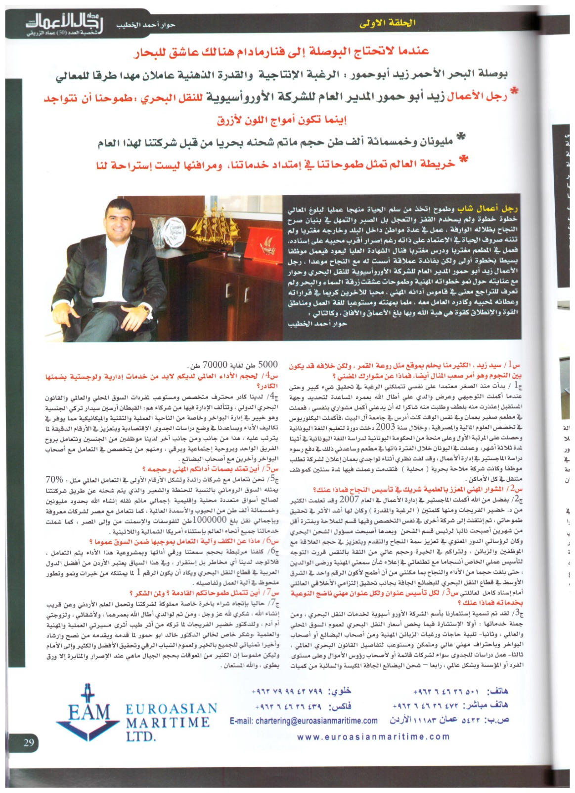

الدكتور زيد شاكر أحمد أبو حمور
رجل أعمال وخبير في الملاحة والنقل البحري
رجل أعمال وخبير في الملاحة والنقل البحري
رجل أعمال أردني، مواليد موسكو عام 1982، حصل على درجة الدكتوراه في تكنولوجيا النقل البحري من الأكاديمية العربية للعلوم والتكنولوجيا بتقدير امتياز. يتقن العربية والإنجليزية، وملم بالروسية واليونانية والتركية، يشغل منصب المدير التنفيذي لشركات الأورواسيوية للملاحة البحرية، عضو مجلس إدارة في عدد من الشركات والوكالات البحرية. وهو شخصية طموحة ومثابرة، عُرف بحبه للعمل وإيمانه العميق بقيمة الاجتهاد كطريق لتحقيق النجاح. لا يتردد في خوض التحديات، يعمل دائماً تحت مبدأ "المجازفة من أجل الهدف"، واضعاً نصب عينيه الرؤية الواضحة والنتائج الملموسة. جمع بين الفكر العملي وروح الريادة، مما جعله نموذجاً يُحتذى به في الإصرار والطموح
يرىالدكتور زيد شاكر أبو حمور
أن قطاع الملاحة والنقل البحري هو عصب حيوي في الاقتصاد العالمي، ومحرك رئيسي للتجارة الدولية. يؤمن بأهمية تطوير هذا القطاع من خلال الابتكار وتوظيف التكنولوجيا الحديثة لتحسين الكفاءة وتقليل التكاليف. كما يولي اهتماماً خاصاً بتأهيل الكفاءات البشرية ورفع مستوى التدريب البحري، معتبراً أن الاستثمار في العنصر البشري لا يقل أهمية عن الاستثمار في البنية التحتية. تنبع رؤيته من قناعة راسخة بأن النقل البحري ليس مجرد وسيلة، بل منظومة استراتيجية تفتح آفاقاً اقتصادية وتنموية واسعة.: ويؤمن الدكتور أبو حمور بأن الملاحة والنقل البحري يشكلان محوراً أساسياً في تعزيز الأمن اللوجستي والسيادة الاقتصادية للدول، خصوصاً تلك ذات المواقع الجغرافية الحيوية مثل الأردن. يركز في رؤيته على تحويل التحديات الإقليمية إلى فرص من خلال تطوير موانئ حديثة، وتوسيع شبكات الربط البحري، وتفعيل الشراكات الإقليمية والدولية. يرى أيضاً أن الرقمنة والتحول الذكي في إدارة سلاسل الإمداد البحرية هو المستقبل، مشيراً إلى أهمية إدخال أنظمة الملاحة الذكية، وتحليل البيانات، وتقنيات الذكاء الاصطناعي لتعزيز الكفاءة والشفافية في العمليات البحرية. كما يؤكد على ضرورة مواءمة البنية التشريعية والبيئية مع المعايير الدولية لضمان سلامة الملاحة وحماية البيئة البحرية. من خلال عمله وخبرته، يسعى الدكتور زيد إلى بناء بيئة بحرية متقدمة تواكب المتغيرات العالمية، وتضع الأردن والمنطقة في موقع تنافسي في قطاع النقل البحري العالمي. .يشغل حالياً منصب المدير التنفيذي لمجموعة شركات الأورواسيوية، وعضو مجلس إدارة في شركات ووكالات بحرية. يتميز بشخصيته الطموحة ونهجه القيادي المبني على "المجازفة من أجل الهدف".
ساهم في دعم مؤسسات رياضية وتعليمية وخيرية محلياً، ويحرص على خدمة المجتمع كجزء من رؤيته القيادية المتكاملة، ويتمتع الدكتور زيد بعلاقة قوية ومبنية على الاحترام والوفاء بوالديه وأهله، يُعرف ببرّه العميق بهم واعتزازه بجذوره العائلية التي تشكل جزءاً أساسياً من شخصيته وقيمه.
له أبحاث منشورة في مجال النقل البحري وتكنولوجيا سلاسل الإمداد، وساهم في تطوير نظريات عملية في إدارة الموانئ والتحول الرقمي البحري.
بحث علمي: المجلة العلمية للدراسات التجارية والبيئية
بحث علمي: الاكاديمية العربية للعلوم والتكنولوجيا والنقل البحري


المرجع: المجلة العلمية للدراسات التجارية والبيئية
المرجع: الاكاديمية العربية للعلوم والتكنولوجيا والنقل البحري
المرجع: المجلة العلمية للدراسات التجارية والبيئية
للتواصل EuroAsian Maritime LTD.Co. - www.euroasianmaritime.com - E-mail: chartering@euroasianmaritime.com